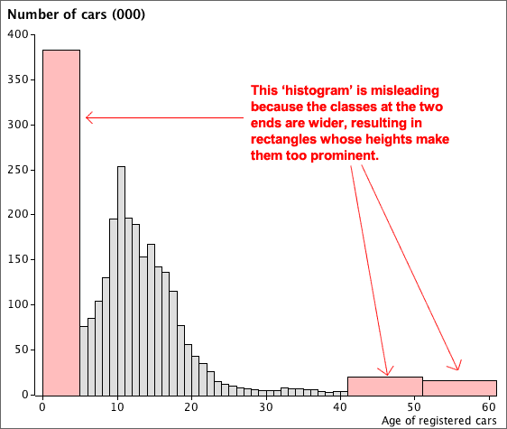
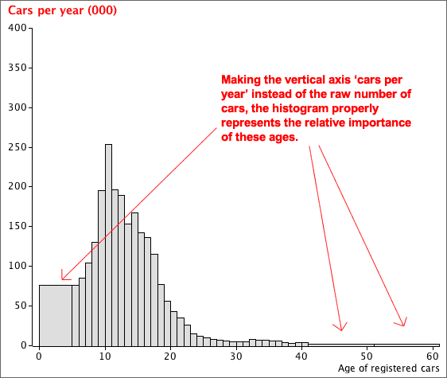

Varying histogram classes
Histograms are sometimes drawn with classes that do not all have the same width. If this is done, it is important that...
The vertical axis of a histogram with mixed class widths must not be 'frequency'.
The example below illustrates the problem:

A correct histogram for these data uses the density of cars on its vertical axis instead of the raw count — the cars per year:
